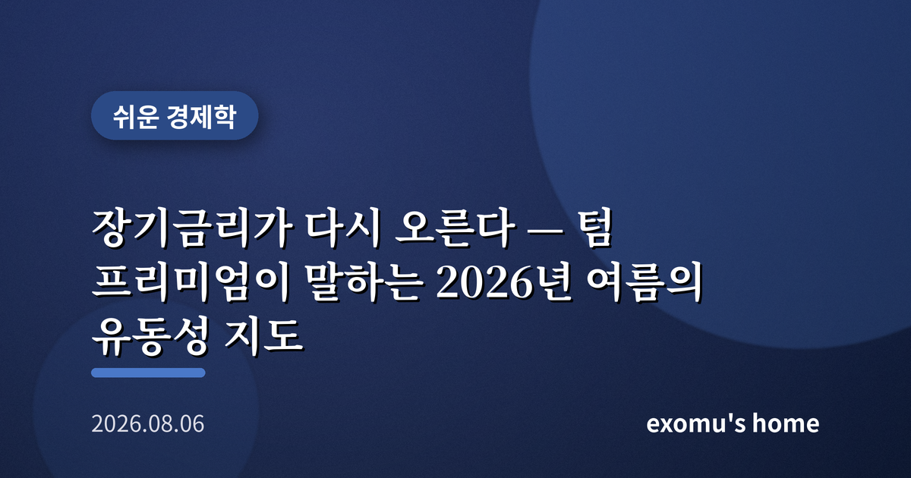
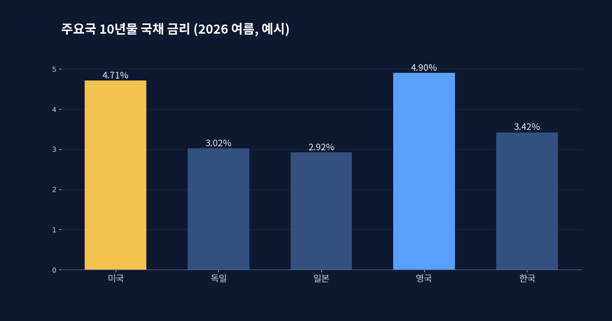
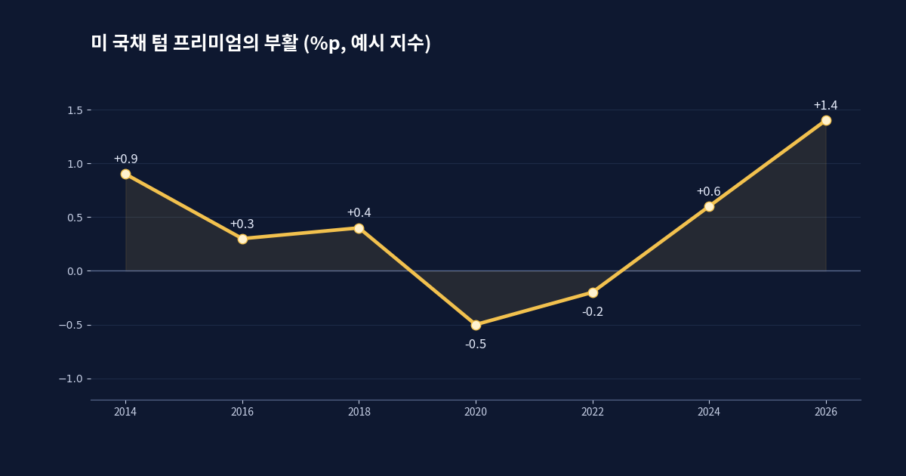
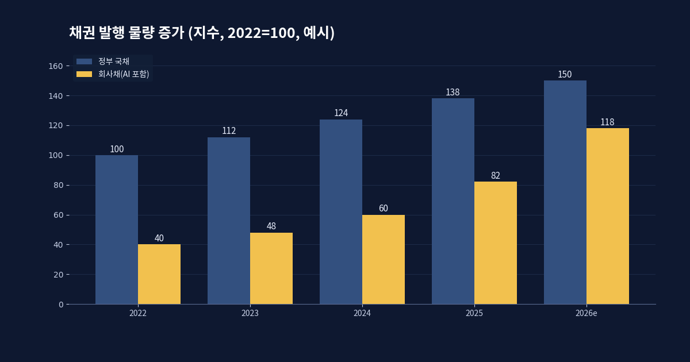
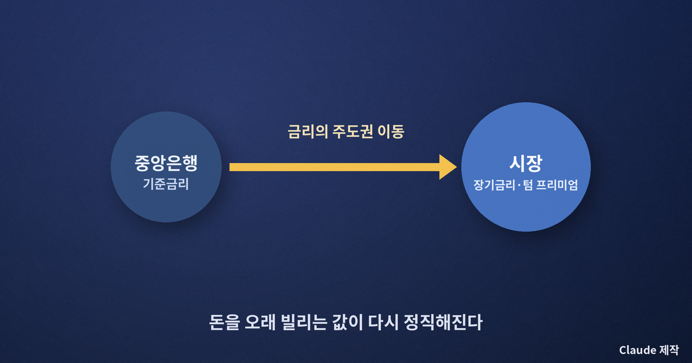

장기금리가 다시 오른다 — 텀 프리미엄이 말하는 2026년 여름의 유동성 지도

연준은 가만히 있는데 장기금리는 오른다
2026년 여름, 이상한 일이 벌어지고 있다. 연방준비제도는 기준금리를 3.50~3.75%에 묶어 둔 채 좀처럼 움직이지 않는데, 정작 시장에서 거래되는 장기 국채 금리는 꾸준히 위로 밀려 올라간다. 7월 말 미국 10년물 국채 금리는 4.71%까지 올라 최근 구간의 위쪽 끝에 닿았고, 독일 10년물은 15년 만의 최고치를, 일본 10년물은 1990년대 중반 이후 처음으로 3%에 다가섰다. 중앙은행이 손을 대지 않는 금리의 영역에서 무언가가 조용히 움직이고 있다는 신호다.
기준금리는 중앙은행이 정하는 초단기 금리다. 그러나 우리가 실제로 살아가는 세계 — 주택담보대출, 회사채, 정부의 이자 부담 — 를 좌우하는 것은 만기가 긴 장기금리다. 그리고 이 장기금리는 중앙은행의 손이 절반밖에 닿지 않는다. 나머지 절반을 결정하는 것이 바로 텀 프리미엄이다.

텀 프리미엄이란 무엇인가
텀 프리미엄은 돈을 오래 빌려주는 대가로 투자자가 추가로 요구하는 보상이다. 10년 뒤에 돈을 돌려받기로 하고 국채를 사면, 그 사이 물가가 오를 수도, 정부가 빚을 너무 많이 찍어낼 수도, 예상 못 한 일이 벌어질 수도 있다. 이 불확실성을 견디는 값이 텀 프리미엄이다. 지난 10여 년간 이 값은 거의 0에 눌려 있었다. 중앙은행이 국채를 대량으로 사들이며 장기금리를 억눌렀기 때문이다. 그런데 지금 그 값이 되살아나고 있다.
텀 프리미엄이 오르면, 중앙은행이 기준금리를 내려도 장기금리는 떨어지지 않는 기묘한 상황이 벌어진다. 실제로 일부 나라에서는 정책금리가 낮아졌는데도 장기 국채 금리가 높은 자리를 지키고 있다. 돈을 빌리는 값의 주도권이 중앙은행에서 시장으로 넘어가고 있다는 뜻이다.

왜 지금 부활하나 — 빚의 공급
가장 큰 이유는 공급이다. 세계 각국 정부는 재정 적자를 메우기 위해 국채를 끊임없이 찍어낸다. 시장이 이 막대한 물량을 소화할 수 있을지에 대한 의구심이 커지면, 투자자는 더 높은 이자를 요구한다. 여기에 새로운 변수가 하나 더해졌다. 인공지능 데이터센터에 천문학적 돈을 쏟아붓는 거대 기술기업들이 회사채를 대량으로 발행하기 시작한 것이다. 아마존, 메타, 마이크로소프트 같은 기업이 빚을 내면, 이들과 경쟁해 투자자를 끌어와야 하는 다른 회사채와 국채도 덩달아 더 높은 금리를 줘야 한다.
한국도 이 흐름에서 자유롭지 않다. 다만 흥미롭게도 원화는 최근 강세다. 8월 초 원·달러 환율은 1,425원 부근까지 내려오며 9개월 만의 최고 수준에 다가섰고, 7월 외환보유액은 두 달째 늘어 4,279억 달러를 기록했다. 7월 수출은 반도체 급증에 힘입어 전년 대비 62.9% 늘어난 989억 달러, 무역흑자는 303억 달러에 달했다. 장기금리 상승이라는 세계적 압력 속에서도, 수출과 외국인 자금이라는 완충장치가 원화를 떠받치고 있는 셈이다.

개인의 자산에는 무엇을 뜻하나
장기금리가 높은 자리를 지킨다는 것은 몇 가지를 동시에 뜻한다. 첫째, 주택담보대출처럼 만기가 긴 대출의 이자 부담이 쉽게 내려가지 않는다. 둘째, 이미 발행된 장기 채권의 가격은 금리가 오를수록 떨어지므로, 장기 채권형 상품을 들고 있다면 평가손을 볼 수 있다. 셋째, 금리가 높으면 미래의 이익을 현재 가치로 환산할 때 크게 깎이므로, 먼 미래의 성장에 기대는 고평가 성장주에는 역풍이 된다.
반대로 짧은 만기의 예금이나 단기 채권은 높은 이자를 그대로 누릴 수 있다. 지금처럼 장기금리의 방향이 불확실한 국면에서는, 만기를 무리하게 길게 늘려 이자를 조금 더 받으려는 욕심이 오히려 위험할 수 있다. 중요한 것은 예측이 아니라 태도다. 금리의 주도권이 시장으로 넘어간 시대에는, 한 방향에 크게 베팅하기보다 만기와 자산을 여러 갈래로 나눠 두는 편이 흔들림을 줄인다.

텀 프리미엄의 부활은 눈에 잘 띄지 않는 사건이다. 그러나 이것은 지난 10년의 저금리 시대가 만들어 낸 습관 — 빚은 언제든 싸게 낼 수 있다는 믿음 — 이 흔들리고 있다는 신호다. 돈을 오래 빌리는 값이 다시 정직하게 매겨지는 시대에는, 나 역시 내 돈의 만기와 방향을 정직하게 점검해 볼 필요가 있다. 금리는 결국 시간의 값이고, 시간의 값이 오르는 여름이다.